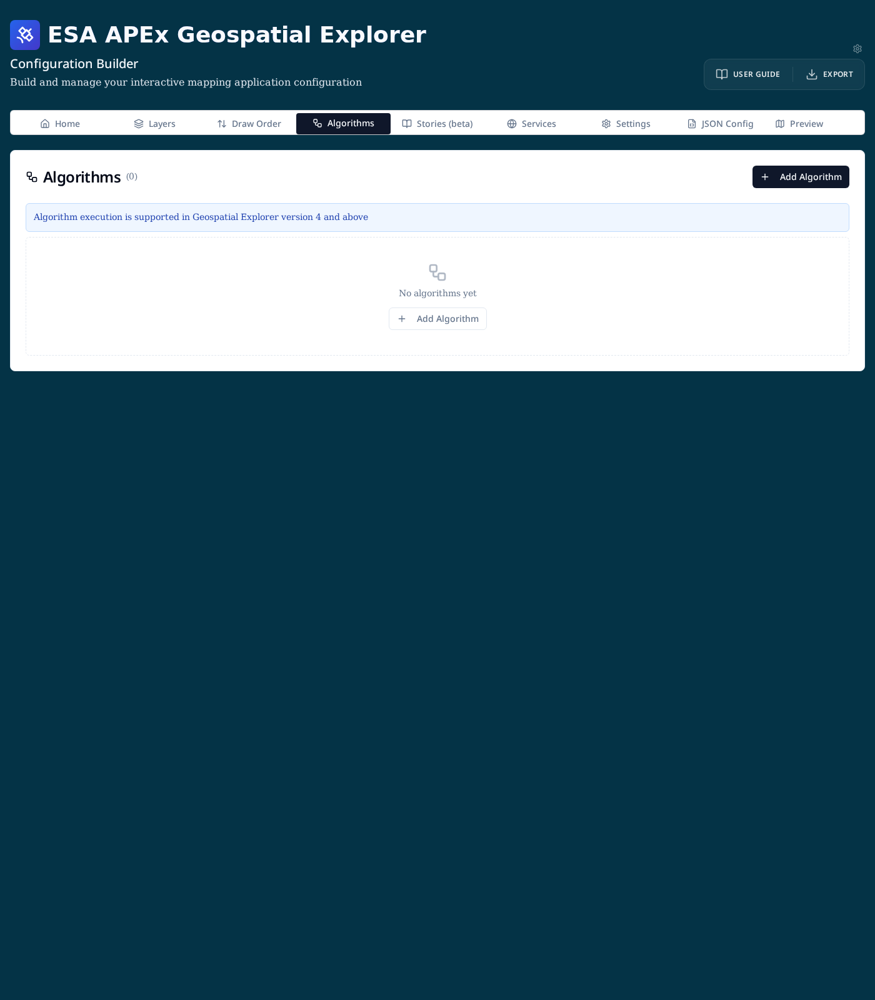
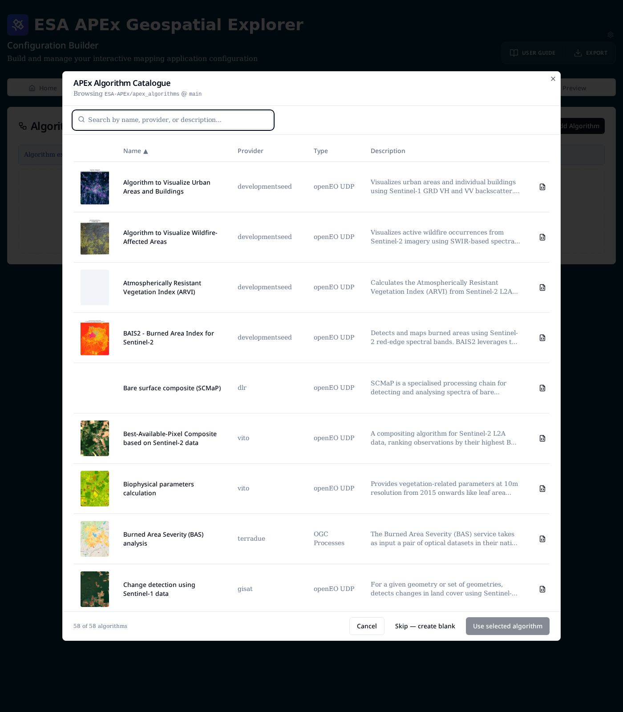
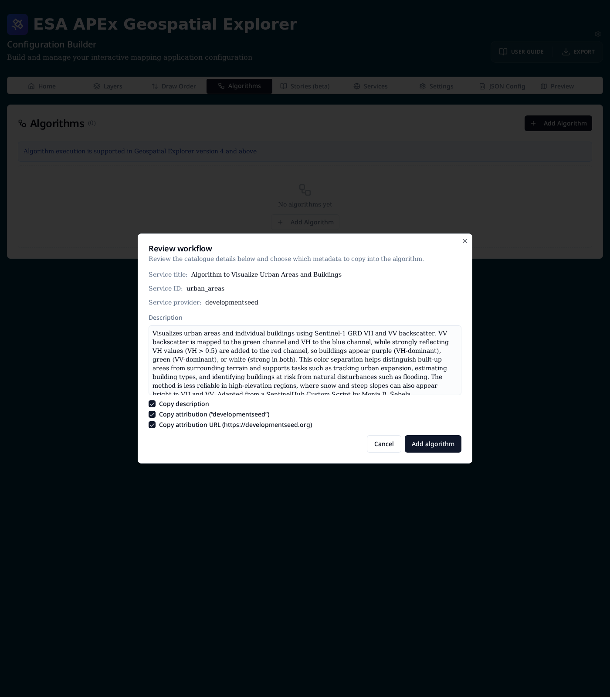
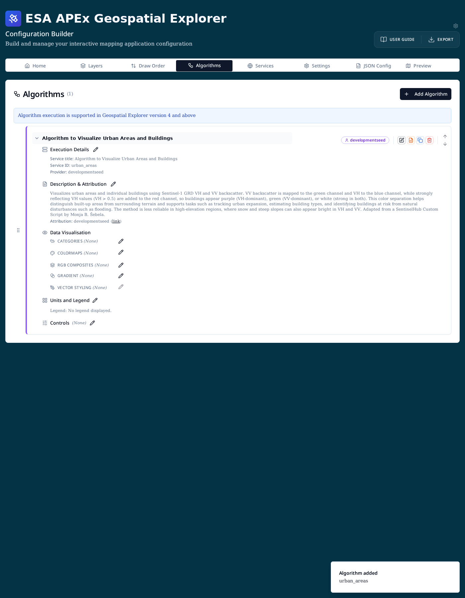

Algorithms¶
The Algorithms tab lets you attach on-demand processing services to a Geospatial Explorer configuration. End users can then run these algorithms against the map — for example to compute a burned-area index, generate a best-available-pixel composite, or detect changes between two Sentinel acquisitions — and the resulting outputs appear as regular map layers.
Viewer requirement
Algorithm execution is supported in Geospatial Explorer version 4 and
above. Earlier viewer bundles will ignore the workflows block.
Optional tab
The Algorithms tab is hidden by default. Enable it from the cog icon → Config Builder settings → Show algorithms tab.
Concepts¶
- Algorithm — a reference to a remote processing service (an openEO
User-Defined Process, or an OGC API Processes job). Internally the config
key is
workflows, but the UI uses "Algorithm" throughout. - APEx Algorithm Catalogue — a curated list of algorithms published from
the
ESA-APEx/apex_algorithmsrepository. The builder fetches it on demand so you can add algorithms without hand-writing service IDs, endpoints, or descriptions. - Service provider — the backend that hosts the algorithm (for example
vito,developmentseed,terradue,dlr,gisat). - Type — either
openEO UDP(User-Defined Process) orOGC Processes.
The Algorithms tab¶
Open the tab from the main navigation. Each row is one algorithm attached to the current configuration.

Use Add Algorithm (top-right or in the empty-state card) to start.
Adding an algorithm from the catalogue¶
The APEx Algorithm Catalogue dialog lists every algorithm published in the APEx repository. You can search by name, provider, or description, and sort by any column.

- Click a row to select it, then Use selected algorithm — or double-click a row to add it directly.
- The document icon on the right of each row opens the raw
record.jsonfor that algorithm, useful when you need to inspect the underlying openEO or OGC definition. - Skip — create blank bypasses the catalogue if you want to configure a private or in-house algorithm by hand.
Reviewing catalogue metadata¶
After selecting a catalogue entry, a Review workflow dialog shows what will be copied into your config.

Toggle the three checkboxes to control which optional metadata is imported:
- Copy description — long-form description shown in the layer card.
- Copy attribution — provider name shown as the attribution label.
- Copy attribution URL — link target for the attribution label.
Service ID, provider, endpoint, namespace, and application are always copied because they identify the remote service. Click Add algorithm to commit.
The algorithm card¶
Once added, each algorithm renders as a card. Click the chevron to expand it and reveal its configuration sections.

- Execution Details — service title, service ID, and provider. Edit with the pencil icon to change endpoint, namespace, or application.
- Description & Attribution — free-form description and attribution text / URL shown to end users in the layer card.
- Data Visualisation — how the algorithm's output is styled on the map. These options mirror the styling controls on regular layers: Categories, Colormaps, RGB composites, Gradient, and Vector styling. Only one is applied at a time — see Data visualisation for the mutual-exclusivity rules.
- Units and Legend — units suffix and legend behaviour for the output layer.
- Controls — user-adjustable controls (for example opacity or thresholds) exposed in the viewer.
Row actions¶
The button cluster at the right of each row provides:
- Edit — reopens the algorithm form with all fields editable.
- Edit JSON — direct JSON editor for the workflow entry, useful for advanced fields not exposed in the form.
- Duplicate — clones the algorithm (its
serviceIdis suffixed with_copy). - Delete — removes the algorithm from the configuration.
- Up / Down arrows — reorder algorithms; drag the handle on the left for free-form ordering.
Configuring a custom (non-catalogue) algorithm¶
Choose Skip — create blank from the catalogue dialog to open the form directly. The required fields are:
- Service title (optional) — human-readable label shown in the UI.
- Service ID (required) — unique identifier the viewer sends to the backend.
- Service provider — pick an existing provider from your Services tab or enter a custom string.
- Additional service details — EO Application Packages — for OGC API
Processes / EOAP-style services, provide:
- Endpoint — the processing service base URL.
- Namespace — application namespace.
- Application — application ID.
For openEO UDP algorithms only the service ID and provider are typically required; the provider's registered openEO endpoint is used automatically.
Technical reference¶
Algorithms are persisted under the top-level workflows array. A minimal
entry looks like this:
json
{
"workflows": [
{
"serviceId": "urban_areas",
"serviceProvider": "developmentseed",
"serviceTitle": "Algorithm to Visualize Urban Areas and Buildings",
"meta": {
"description": "Visualizes urban areas and individual buildings …",
"attribution": {
"text": "developmentseed",
"url": "https://developmentseed.org"
}
},
"layout": { "layerCard": {} }
}
]
}
For OGC Processes entries, add a serviceDetails block:
json
"serviceDetails": {
"endpoint": "https://ogc-api.example.org",
"namespace": "burned-area",
"application": "bas-analysis"
}
See the JSON schema reference for the full list of supported fields on each workflow entry.